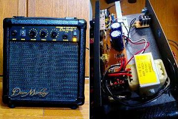
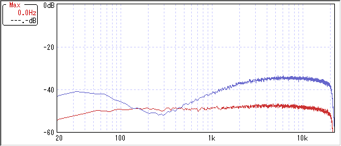
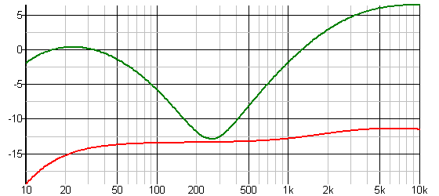
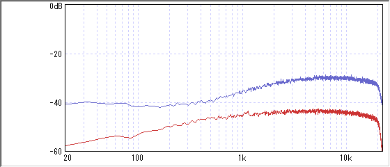
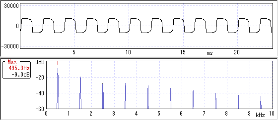

DeanMarkley K-15
2007年06月13日 カテゴリー：ギターアンプ・ベースアンプ

ジャンクで買った15Wギターアンプです。DeanMarkleyというメーカーは今は主にギター弦を作ってるみたいです。
プリアンプ部分の回路はテキトーに自分でいじりました。電気的知識が少ないので正しいのかわかりません。松美庵さんのページにあった回路図を参考にしました。
コントロールはディストーションスイッチ、LEVEL、TREBLE、BASSです。MIDコントロールを強引につけてもよかったんですが、まあ練習用アンプということでナシ。
音は…気分的には良くなりました。がんばったわりに変化してないような…。
▽周波数特性（赤がBASSとTREBLE両方0、青は両方フル）

トーン回路はFenderTwinReverbを参考にしてます。
▽周波数特性（シミュレーション）

実測とシミュレーションはほぼ同じですね。
▽周波数特性（ディストーションON）（赤がBASSとTREBLE両方0、青は両方フル）

低域減らしてます。
▽波形・倍音特性（ディストーションON）

ちゃんと波形がクリップしてます。ちなみにダイオードは1S2076Aの対称です。奇数次倍音しか出てないですね～奇数次倍音は耳障りが悪い音らしいんですが、結構自分ではこの歪み気に入ってます（真空管の歪みは偶数次倍音が多いらしい）。